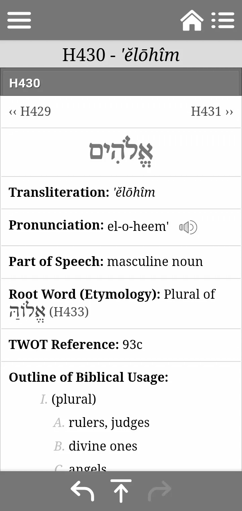

Many read the Bible as a historical document, missing the entire psychological plot laid out in the opening verses.
Neville Goddard’s teaching reveals the Bible as the greatest textbook on the Law of Assumption: Ask, Believe, Receive. Here is how the foundational verses establish this absolute law of consciousness.
Level 1: The Source — I AM
Exodus 3:14: “I AM THAT I AM”
This is the foundation. It is pure Awareness. Before anything else exists, the fundamental reality is assumption—the I AM. All power, all existence, stems from your immediate, present awareness: the way you think, talk to yourself, imagine, and assume. This is God.
Level 2: The Inner Rulers — Elohim

Verse 1: “Elohim means judges and rulers.”
From the source of Awareness (I AM) flow the Elohim. These are not external deities; they are the inner judges and rulers—your established beliefs, habits, thoughts, personality, and general states of consciousness. These beliefs act as decrees, setting the parameters for your world. Your current state of being is the 'Elohim' ruling your domain.
Level 3: The Creative Decree — Imagination in Motion
Genesis 1:26: “Let us make man in our imagination.”
The inner rulers (Elohim) issue their fundamental command through Imagination. The opening scene of Genesis is illustrated as imagination in motion. The world is built not from external causation, but from the substance of your inner visualising and assuming. When you choose a state, you are the 'us' making man in your own imagination.
Level 4: The Law of Self-Contained Power
Genesis 1:11: “...the seed is in itself.”
Your ability is not reliant on anything outside of your chosen state. The seed—your assumed idea—contains the power to manifest within its own nature. Imagination is inherently self-sufficient; it creates from within. Once the assumption is made, the manifestation is inevitable.
The Mission: Applying the Law
Once this structure is understood, the practical mission of the Law of Assumption becomes clear:
Genesis 2:24: “A man shall leave father and mother and cleave to his wife.”
-
Leave father and mother: Disregard the old state, the past conditions, and the external facts that contradict your desire. You must abandon the old belief system and awareness.
-
Cleave to his wife: Unite completely with the new Assumption (the desired state). The 'wife' is your new identity, the life you are now married to. This union must be total—a state of belief that is unwavering.
This is the core of the Law of Assumption: leave the undesirable state, and unite with the desire until it is made manifest. Jesus’s teachings and parables about judges, widows, and weddings all follow this plot—the shift in consciousness (the judge) leads to the fulfillment of the desire (the wedding).
Summary: The Bible’s Creative Structure
Foundation: I AM (Awareness)
Rulers: Elohim (Beliefs/States of Consciousness)
Method: Imagination (The Creative Decree)
Action: Cleave to the New Assumption (Leave the old state and believe)
The Law: Ask, Believe, Receive